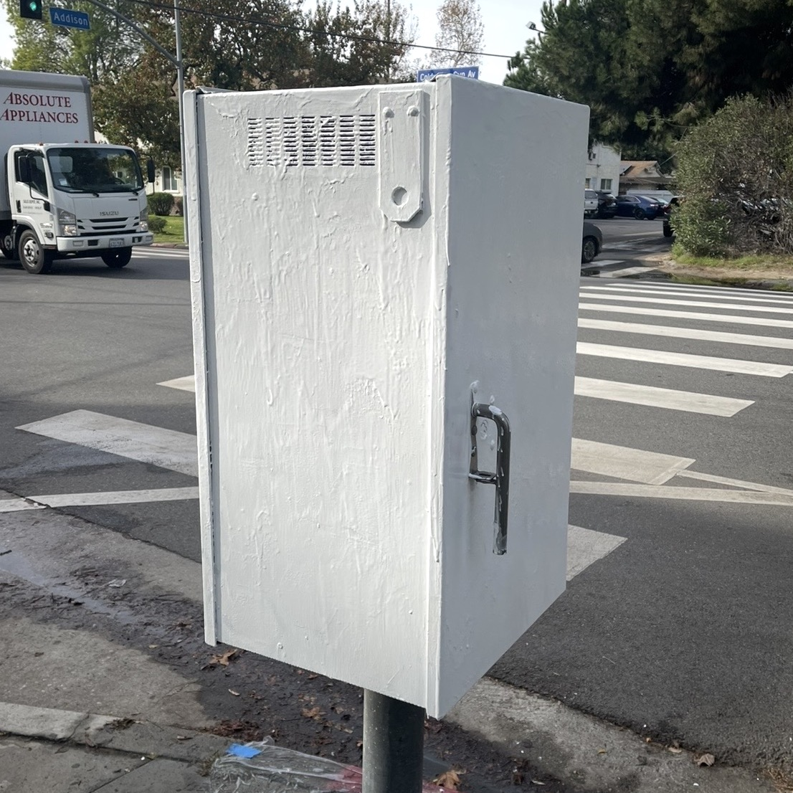
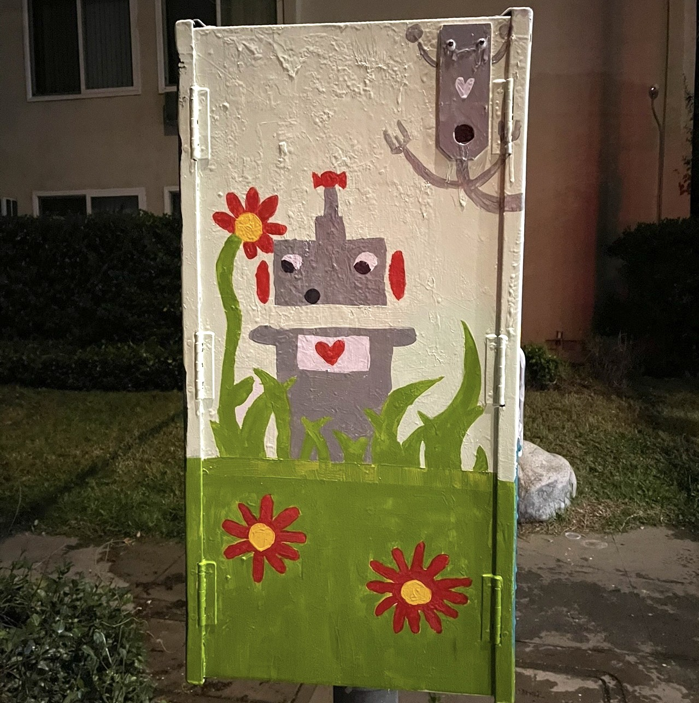
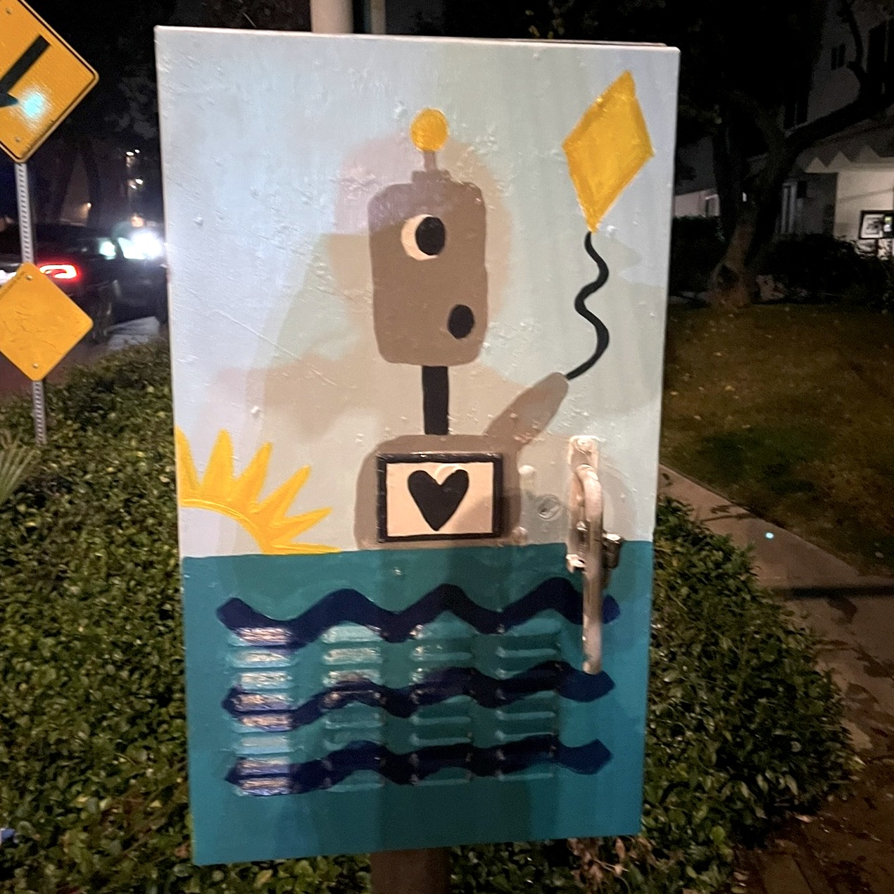
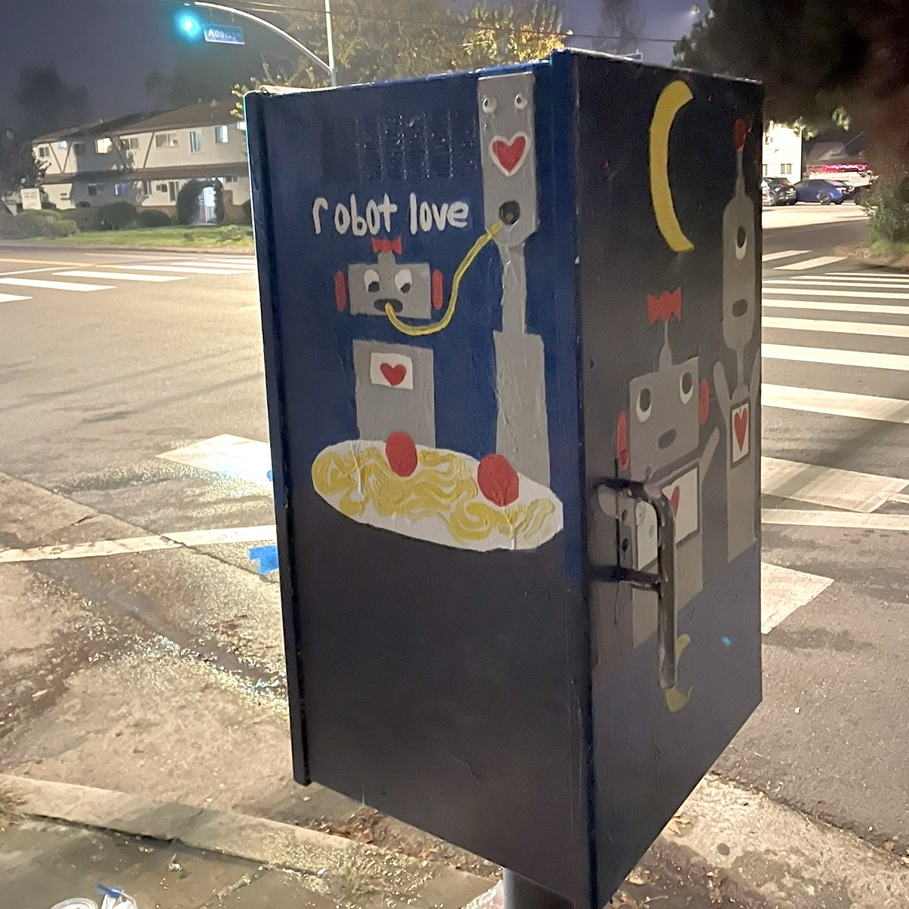
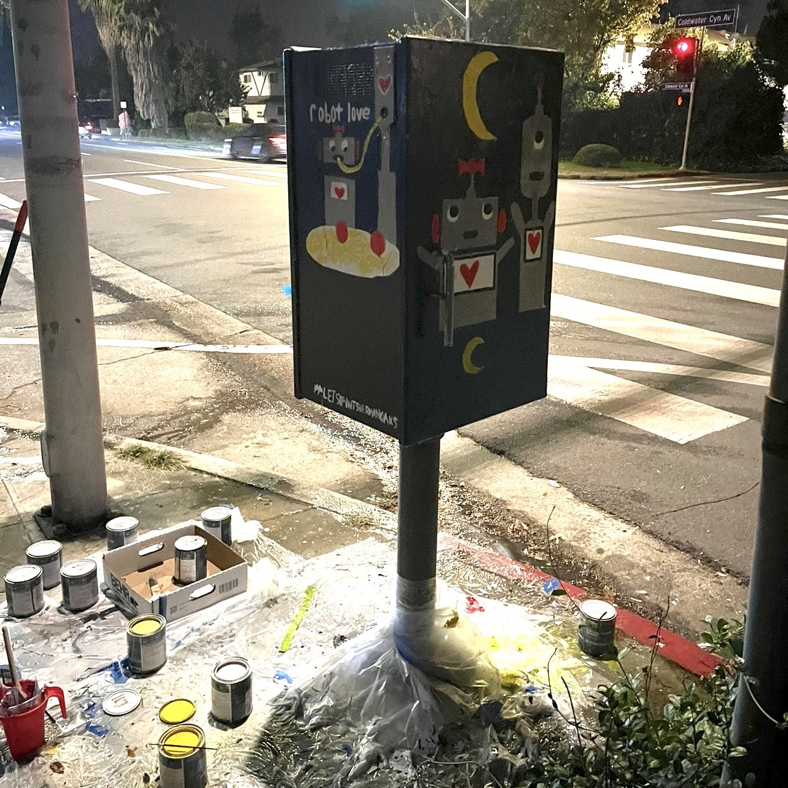

Coldwater Canyon & Addison, Los Angeles
Painting a neighborhood utility box in one day.
I've always been a huge fan of community art projects, probably rooted in the Big Sunday community service events I went to growing up in Los Angeles. In the neighborhood of Sherman Oaks (which has now become very trendy since my childhood -- what happened?!), there is a super cool initiative for painting utility boxes called Let's Paint Sherman Oaks!. It's a straightforward application process (the city just needs to approve your design is appropriate), and you receive a stipend to help cover the cost of paints! Inspired by our research in robotics, a labmate of mine from ILIAD and I spent a whole day in December 2023 painting robots on a utility box at the corner of Coldwater Canyon & Addison.
For the design, I was originally inspired by the spaghetti scene from Lady and the Tramp, but wanted to paint robots instead of dogs. I then thought it would be cute to show a mini-love story: two robots, solo on two frames, followed by a spaghetti-first-date, and then in love under the moonlight :) This was easy to design on Keynote for the submission...but SO hard to paint in person. Painting a utility box requires a good primer (that needs hours to dry!), tackling gravity causing the paint to drip, and a downwards painting angle. We called our painting Robot Love.
It was all worth it, though, when neighbors walked by and complimented our box! If you're ever in Sherman Oaks, stop by and check it out!




